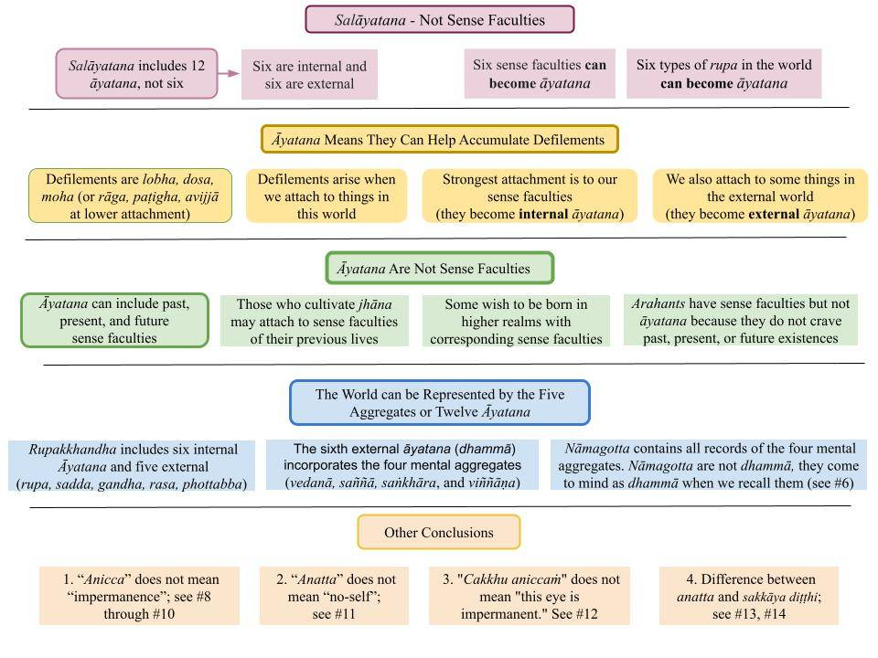

Saḷāyatana is incorrectly translated into English as the "six sense fields." Arahants do not have saḷāyatana but have the six sense fields.
May 1, 2023; revised May 2, 2023

Print/Download: "11. Salāyatana - Not Sense Faculties"
Introduction
1. Most English translations of suttas incorrectly translate "saḷāyatana" as the "six sense fields." See, for example, "Paṭiccasamuppāda Sutta (SN 12.1)," where."saḷāyatana nirodhā phassa nirodho" is translated as "When the six sense fields cease, contact ceases." Arahants (or the Buddha) would have their sense fields working at optimum levels but do not have "saḷāyatana," as I explain below.
- In most cases, it is best to look at the "definitions" of key Pali words in the three Commentaries included with the Tipiṭaka (Paṭisambhidāmagga, Peṭakopadesa, and Nettippakarana) or the "Vibhaṅga" in the Abhidhamma Pitaka.
- Other Commentaries written later (and not included in the Tipiṭaka) have apparent contradictions with the Tipiṭaka; see "Tipiṭaka Commentaries – Helpful or Misleading?"
Twelve Āyatana, Not Six
2. The "Āyatana vibhaṅga" section of the Vibhaṅga explains that there are 12 āyatana not just six: "cakkhāyatanaṁ, rūpāyatanaṁ, sotāyatanaṁ, saddāyatanaṁ, ghānāyatanaṁ, gandhāyatanaṁ, jivhāyatanaṁ, rasāyatanaṁ, kāyāyatanaṁ, phoṭṭhabbāyatanaṁ, manāyatanaṁ, dhammāyatanaṁ."
- They are explained as six internal (cakkhāyatanaṁ, sotāyatanaṁ, ghānāyatanaṁ, jivhāyatanaṁ, kāyāyatanaṁ, manāyatanaṁ) and six external āyatana (rūpāyatanaṁ, saddāyatanaṁ, gandhāyatanaṁ, rasāyatanaṁ, phoṭṭhabbāyatanaṁ, dhammāyatanaṁ) in the "Saḷāyatana Vagga" in Saṁyutta Nikāya (SN 4.)
- Obviously, the six internal āyatana are associated with the six senses (five physical senses and the mind), and the six external āyatana are associated with the external world. The six senses BECOME six internal āyatana when interacting with the external world and accumulating kamma for the Saṁsāric journey (rebirth process.)
- The brief explanation: When we attach to things in the external world, we convert our senses into āyatana (ajjhatta āyatana), i.e., we start using them to enjoy "pleasurable things" in the external world. Those "pleasurable things" then become "external āyatana" (bāhira āyatana.)
- The SN4 starts with three suttas (SN 35.1 through 35.3), stating the anicca, dukkha, and anatta nature of the internal āyatana. The next three state the anicca, dukkha, and anatta nature of the external āyatana.
Pada Nirutti of "Āyatana"
3. The Pali word "āyatana" comes from "āya" + "thana," where "āya" means "to acquire" and "thana" means "place" or "location." Note that "āyatana" is pronounced as "āyathana," as in "thief."
- In this specific case, "āyatana" is where one "collects (defilements)" for the rebirth process (Saṁsāra.)
- Defilements at an intense level are lobha, dosa, and moha. Those reduce to rāga, paṭigha, and avijjā with the dispelling of the ten types of micchā diṭṭhi. See, "Micchā Diṭṭhi, Gandhabba, and Sōtapanna Stage."
- When the six sense faculties are used for "collecting," they BECOME "āyatana." The incentive for "collecting defilements" is attachment to things in this world (rūpā, saddā, gandha, rasa, phoṭṭhabba, dhammā.) Thus, they are external āyatana.
- Of course, Arahants do not engage in "collecting," and thus, their sense faculties do not become āyatana; furthermore, external rupa of all six types do not become āyatana either.
Āyatana Are Not "Sense Faculties"
4. Since internal āyatana takes into account all past, present, and future (perceived) sense faculties, our current sense faculties are only a minute fraction of the category of "internal āyatana."
- Furthermore, the sense faculties of living Arahants (or living Buddha) are NOT āyatana. They are mere "sense faculties."
- The sense faculties BECOME āyatana ONLY IF one views/perceives them as one's own. With that wrong view/perception, they use the sense faculties to "enjoy worldly things." That is how sense faculties become āyatana.
- To get rid of wrong view/perception, we must see the anicca, dukkha, and anatta nature of the sense faculties (past, present, and future) as stated in the "Ajjhattāyatanaanicca Sutta (SN 35. 222)" through "Ajjhattāyatanaanatta Sutta (SN 35.224)."
- Another revelation is that "anicca" does not mean "impermanence," and "anatta" does not mean "no-self."
The whole World is Comprised of Twelve Āyatana
5. The sutta #23 of the Saḷāyatana Vagga states that "all" ("sabba") in this world is included in the twelve āyatana: "Sabba Sutta (SN 35.23)."
- A series of 59 short suttas from "SN 35. 168" through "SN 35.227" explain that past, future, and paccuppanna ("present") versions of internal and external āyatana are included in the category of āyatana.
- They further explain that they ALL have the anicca, dukkha, and anatta nature.
- The reason is that the description of "the world" in terms of twelve āyatana is equivalent to the description of the five aggregates, for example.
"The World" Can be Represented in Many Ways
6. As in the case of the five aggregates, the twelve āyatana are categorized as past, future, and paccuppanna ("present"), as pointed out above.
- That makes sense since the six internal and five external āyatana takes into account the rupakkhandha.
- The sixth external āyatana (dhammā) incorporates the kamma viññāṇa; thus, it can be represented by the viññāṇa aggregate.) Nāmagotta contains all records of the vipāka viññāṇa, and thus, can be represented by the first three mental aggregates.
- Even though nāmagotta are not dhammā, they come to mind as dhammā when we recall them. I have explained that in the forum (but I should write a post to explain it fully.) See comment #40356 (on September 14, 2022, at 2:42 pm) in the thread "Post on 'Nāmagotta, Bhava, Kamma Bīja, and Mano Loka (Mind Plane)'”
- You may want to think about this carefully. See the analysis of the five aggregates in "The Five Aggregates (Pañcakkhandha)." We can discuss any questions in the forum.
Craving Āyatana Is Equivalent to "Pañca Upādānakkhandhā"
7. In the section "The Five Aggregates (Pañcakkhandha)," we discussed the fact that we get attached to only a fraction of the five aggregates (things in this world.)
- In this "analysis in terms of the twelve āyatana," we can see that we attach to the same pañca upādānakkhandā (pañcupādānakkhandā.)
- We attach to all six internal āyatana. That happens for all average humans who view/perceive all internal sense faculties as "mine." As we discussed, that view is sakkāya diṭṭhi.
- However, we attach to only a fraction of external āyatana. For example, we attach only to a fraction of external rupa, sadda, gandha, rasa, and phottabba.
- With the above background, we can now discuss some critical facts.
Wrong Translations of Anicca
8. I mentioned above (#4, #5) that the twelve āyatana are categorized as past, future, and paccuppanna ("present.") That is elaborated in a series of suttas from SN 35. 186 through SN 35. 227.
- The three suttas "Ajjhattātītānicca Sutta (SN 35.186)," "Ajjhattānāgatānicca Sutta (SN 35.187)," and "Ajjhattapaccuppannānicca Sutta (SN 35.188)" state that the six internal āyatana belonging to the past, future and present are of the anicca nature.
- Obviously, the past āyatana refers to those that one had in previous lives, i.e., one's past āyatana ARE of anicca nature. It does not make sense to say, "One's past āyatana ARE impermanent."
- The point is that some yogis who can look at previous lives and see their births in Deva or Brahma realms may boast about them. Yet, those "seemingly valuable existences" could not be maintained. Any existence among the 31 realms (whether now, in the past, or in the future) is of anicca nature; not one can be maintained in that state.
- Therefore, it should be clear that the translation of "anicca" as "impermanence" does not make sense.
9. The three suttas "Bāhirātītādianicca Sutta (SN 35.195-197)" state that the six external āyatana belonging to the past, future and present are of the anicca nature: "Rūpā, bhikkhave, aniccā atītā anāgatā paccuppannā. Saddā … gandhā … rasā … phoṭṭhabbā … dhammā aniccā atītā anāgatā paccuppannā."
- Again, all three tenses are shown without distinction.
- That verse should be translated as, "Bhikkhus, any rupa, whether past, future, or present, has the anicca nature. The same applies to any sadda (sounds,) .., and dhammā.” Also, note that dhammā is incorrectly translated as "thoughts." That error seems to be in all the suttas in SN 35.
- That is what happens when the translator does not understand the fundamentals of Buddha Dhamma!
Wrong Translations of Anatta
10. In most English texts, "anatta" is translated as "no-self." Here we also find evidence to the contrary.
- The "Bāhirāyatanaanatta Sutta (SN 35. 227)" states, "Rūpā, bhikkhave, anattā. Saddā … gandhā … rasā … phoṭṭhabbā … dhammā anattā." That is translated word by word as, "Mendicants, sights, sounds, smells, tastes, touches, and thoughts are not-self.”
- What does it mean to say "sights" are "no-self"? Touches are "no-self"? How can sights, sounds, ..touches have a "self"?
- "Bāhirānattachandādi Sutta (SN 35. 183-185)" has similar verses for saddā … gandhā … rasā … phoṭṭhabbā … dhammā.
- The correct meaning of anatta is explained in "Anatta – A Systematic Analysis."
"Cakkhu Aniccaṁ" Means "Cakkhāyatana Is of Anicca Nature"
11. Many think "Cakkhu, bhikkhave, aniccaṁ" Means "Bhikkhus, the eye is impermanent." That is how most translators have translated it. So, many people meditate, saying, "My eyes are impermanent."
- But the meaning is more profound: "The use of eye faculty to accumulate sensory pleasures will not lead to the intended outcome in the long run. Furthermore, it will lead to unintended detrimental outcomes in the long run."
- I specifically mention "in the long run" because some outcomes materialize only in future lives.
- Any cakkhu (set of physical eyes with associated cakkhu pasāda rupa) that we ever had, we have now, or may have in the future, HAVE the anicca nature!
- Of course, the same hold for all 12 internal and external āyatana.
Connection to Three Diṭṭhis
12. "Micchādiṭṭhipahāna Sutta (SN 35. 165)," "Sakkāyadiṭṭhipahāna Sutta (SN 35. 166)," and "Attānudiṭṭhipahāna Sutta (SN 35. 167)" describe that one can get rid of micchā diṭṭhi, sakkāya diṭṭhi, and attānu diṭṭhi by realizing the anicca, dukkha, and anatta nature of the 12 āyatana respectively.
- As I pointed out in #10 above, "anatta" is not about a "self." The wrong view of an "unchanging self" is in the three views of micchā diṭṭhi, sakkāya diṭṭhi, and attānu diṭṭhi.
- Note that "atta" (related to "anatta") is different from "attā" in attānu diṭṭhi. Sakkāya diṭṭhi and attānu diṭṭhi are about a "self" or "me" (attā) traversing the rebirth process. See "Anatta – the Opposite of Which Atta?"
- On the other hand, "anatta nature" means that "anything in this world has no value; one becomes helpless in the long run when such things are pursued."
13. As we know, a Sotapanna gets on the Noble Eightfold Path by just comprehending the “wider worldview” of the Buddha. Paṭicca Samuppāda explains that no "permanent self" (attā) traverses the rebirth process. That leads to the removal of sakkāya diṭṭhi and attānu diṭṭhi.
- Concomitantly, one realizes anything in this world is of anicca, dukkha, and anatta nature (Tilakkhana.)
- Those two realizations involve two types of atta. Sakkāya diṭṭhi involves "attā" (with a long "a"), and anatta in Tilakkhana involves atta (with a long "a.")
14. This post is packed with many subtle issues. Please take the time to review the links provided. Don't hesitate to ask questions in the forum. It is not possible to include details in a single post.
Saḷāyatana é traduzido incorretamente para o inglês como “seis campos sensoriais”. Os Arahants não possuem Saḷāyatana, mas sim os seis campos sensoriais.
1º de maio de 2023; revisado em 2 de maio de 2023
Imprimir/Baixar: “11. Saḷāyatana – Não são faculdades sensoriais”
Introdução
1. A maioria das traduções em inglês dos Suttā traduz incorretamente “Saḷāyatana” como os “seis campos sensoriais”. Veja, por exemplo, o “Paṭiccasamuppāda Sutta (SN 12.1)”, onde ““Saḷāyatana nirodhā Phassa nirodho” é traduzido como “Quando os seis campos sensoriais cessam, o contato cessa”. Os Arahants (ou o Buddha) teriam seus campos sensoriais funcionando em níveis ideais, mas não possuem “Saḷāyatana”, como explico a seguir.
- Na maioria dos casos, é melhor consultar as “definições” das palavras-chave em Pālī nos três Comentários incluídos no Tipiṭaka (Paṭisambhidāmagga, Peṭakopadesa e Nettippakarana) ou no “Vibhaṅga”, no Abhidhamma Pitaka.
- Outros comentários escritos posteriormente (e não incluídos no Tipiṭaka) apresentam contradições aparentes com o Tipiṭaka; consulte “Comentários do Tipiṭaka – Úteis ou Enganosos?”
Doze Āyatana, não seis
2. A seção “Āyatana vibhaṅga” do Vibhaṅga explica que existem 12 Āyatana, e não apenas seis: “cakkhāyatanaṁ, rūpāyatanaṁ, sotāyatanaṁ, saddāyatanaṁ, ghānāyatanaṁ, gandhāyatanaṁ, jivhāyatanaṁ, rasāyatanaṁ, kāyāyatanaṁ, phoṭṭhabbāyatanaṁ, manāyatanaṁ, dhammāyatanaṁ.”
- Eles são explicados como seis āyatana internos (cakkhāyatanaṁ, sotāyatanaṁ, ghānāyatanaṁ, jivhāyatanaṁ, kāyāyatanaṁ, manāyatanaṁ) e seis āyatana externos (rūpāyatanaṁ, saddāyatanaṁ, gandhāyatanaṁ, rasāyatanaṁ, phoṭṭhabbāyatanaṁ, dhammāyatanaṁ) no “Saḷāyatana Vagga” do Saṁyutta Nikāya (SN 4.)
- Obviamente, os seis Āyatana internos estão associados aos seis sentidos (os cinco sentidos físicos e a mente), e os seis Āyatana externos estão associados ao mundo externo. Os seis sentidos TORNAM-SE seis Āyatana internos ao interagirem com o mundo externo e acumularem Kamma para a jornada de Renascimento (processo de Renascimento).
- A breve explicação: quando nos apegamos às coisas do mundo externo, convertemos nossos sentidos em Āyatana (ajjhatta Āyatana), ou seja, passamos a usá-los para desfrutar das “coisas prazerosas” do mundo externo. Essas “coisas prazerosas” tornam-se então “Āyatana externos” (bāhira āyatana).
- O SN4 começa com três Suttā (SN 35.1 a 35.3), que expõem a natureza de Anicca, Dukkha e Anattā dos Āyatana internos. Os três seguintes expõem a natureza de Anicca, Dukkha e Anattā dos Āyatana externos.
Pada Nirutti de “Āyatana”
3. A palavra em Pālī “Āyatana” deriva de “āya” + “thana”, em que “āya” significa “adquirir” e “thana” significa “lugar” ou “local”. Observe que “Āyatana” é pronunciado como “āyathana”, como em “ladrão”.
- Nesse caso específico, “Āyatana” é onde se “acumula (impurezas)” para o processo de Renascimento (Saṁsāra).
- As impurezas em um nível intenso são Lobha, Dosa e Moha. Essas se reduzem a Rāga, Paṭigha e Avijjā com a dissipação dos dez tipos de Micchā Diṭṭhi. Veja “Micchā Diṭṭhi, Gandhabba e o Estágio de Sotāpanna”.
- Quando os seis sentidos são utilizados para “coletar”, eles SE TORNAM “Āyatana”. O incentivo para “acumular impurezas” é o apego às coisas deste mundo (rūpā, saddā, gandha, rasa, phoṭṭhabba, Dhammā). Assim, elas são Āyatana externos.
- É claro que os Arahants não se dedicam à “coleta” e, portanto, seus órgãos sensoriais não se tornam Āyatana; além disso, os Rūpa externos de todos os seis tipos também não se tornam Āyatana.
Os Āyatana não são “faculdades sensoriais”
4. Como os Āyatana internos levam em conta todas as faculdades sensoriais (percebidas) do passado, presente e futuro, nossas faculdades sensoriais atuais são apenas uma fração minúscula da categoria de “Āyatana internos”.
- Além disso, os órgãos sensoriais dos Arahants vivos (ou do Buddha vivo) NÃO são Āyatana. São meros “órgãos sensoriais”.
- As faculdades sensoriais SE TORNAM Āyatana SOMENTE SE a pessoa as enxergar/perceber como próprias. Com essa visão/percepção errada, ela usa as faculdades sensoriais para “desfrutar das coisas mundanas”. É assim que as faculdades sensoriais se tornam Āyatana.
- Para nos livrarmos da visão/percepção errônea, devemos enxergar a natureza Anicca, Dukkha e Anattā das faculdades sensoriais (passado, presente e futuro), conforme afirmado no “Ajjhattāyatanaanicca Sutta (SN 35.222)” até o “Ajjhattāyatanaanatta Sutta (SN 35.224)”.
- Outra revelação é que “Anicca” não significa “impermanência” e “Anattā” não significa “não-eu”.
O mundo inteiro é composto por doze Āyatana
5. O sutta nº 23 do Saḷāyatana Vagga afirma que “tudo” (“sabba”) neste mundo está incluído nos doze Āyatana: “Sabba Sutta (SN 35.23)”.
- Uma série de 59 Suttā curtos, de “SN 35.168” a “SN 35.227”, explica que as versões passadas, futuras e paccuppanna (“presente”) dos āyatana internos e externos estão incluídas na categoria de āyatana.
- Eles explicam ainda que TODOS possuem a natureza de Anicca, Dukkha e Anattā.
- A razão é que a descrição do “mundo” em termos dos doze Āyatana é equivalente à descrição dos cinco agregados, por exemplo.
“O Mundo” Pode Ser Representado de Muitas Maneiras
6. Assim como no caso dos cinco agregados, os doze Āyatana são categorizados como passados, futuros e paccuppanna (“presentes”), conforme apontado acima.
- Isso faz sentido, já que os seis Āyatana internos e os cinco externos levam em conta o rupakkhandha.
- O sexto Āyatana externo (Dhammā) incorpora o Kamma Viññāṇa; assim, ele pode ser representado pelo agregado de Viññāṇa. Nāmagotta contém todos os registros do Vipāka Viññāṇa e, portanto, pode ser representado pelos três primeiros agregados mentais.
- Embora os nāmagotta não sejam Dhammā, eles vêm à mente como Dhammā quando os recordamos. Expliquei isso no fórum (mas deveria escrever um ensaio para explicar isso completamente). Veja o comentário nº 40356 (em 14 de setembro de 2022, às 14h42) no tópico “Postagem sobre ‘Nāmagotta, Bhava, Kamma Bīja e Mano Loka (Plano Mental)’”
- Talvez seja bom você refletir sobre isso com cuidado. Veja a análise dos cinco agregados em “Os Cinco Agregados (Pañcakkhandha)”. Podemos discutir quaisquer dúvidas no fórum.
O desejo por Āyatana é equivalente a “Pañca Upādānakkhandhā”
7. Na seção “Os Cinco Agregados (Pañcakkhandha)”, discutimos o fato de que nos apegamos apenas a uma fração dos cinco agregados (coisas neste mundo).
- Nesta “análise em termos dos doze Āyatana”, podemos ver que nos apegamos aos mesmos pañca upādānakkhandā (pañcupādānakkhandā).
- Nos apegamos a todos os seis Āyatana internos. Isso acontece com todos os seres humanos comuns que veem/percebem todas as faculdades sensoriais internas como “minhas”. Conforme discutimos, essa visão é Sakkāya Diṭṭhi.
- No entanto, nos apegamos apenas a uma fração dos Āyatana externos. Por exemplo, nos apegamos apenas a uma fração dos Rūpa, sadda, gandha, rasa e phottabba externos.
- Com esse pano de fundo, podemos agora discutir alguns fatos críticos.
Traduções incorretas de Anicca
8. Mencionei acima (n.º 4, n.º 5) que os doze Āyatana são categorizados como passado, futuro e paccuppanna (“presente”). Isso é detalhado em uma série de Suttā, desde o SN 35.186 até o SN 35.227.
- Os três Suttā “Ajjhattātītānicca Sutta (SN 35.186)”, “Ajjhattānāgatānicca Sutta (SN 35.187)”, e “Ajjhattapaccuppannānicca Sutta (SN 35.188)” afirmam que os seis Āyatana internos pertencentes ao passado, ao futuro e ao presente são de natureza Anicca.
- Obviamente, os Āyatana do passado referem-se àqueles que a pessoa teve em vidas anteriores, ou seja, os Āyatana do passado SÃO de natureza Anicca. Não faz sentido dizer: “Os Āyatana do passado SÃO impermanentes”.
- A questão é que alguns iogues, capazes de contemplar vidas anteriores e ver seus nascimentos nos reinos dos Devas ou de Brahmā, podem se gabar disso. No entanto, essas “existências aparentemente valiosas” não puderam ser mantidas. Qualquer existência entre os 31 reinos (seja agora, no passado ou no futuro) é de natureza Anicca; nenhuma delas pode ser mantida nesse estado.
- Portanto, deve ficar claro que a tradução de “Anicca” como “impermanência” não faz sentido.
9. Os três Suttā “Bāhirātītādianicca Sutta (SN 35.195-197)” afirmam que os seis Āyatana externos pertencentes ao passado, ao futuro e ao presente são de natureza Anicca: “Rūpā, bhikkhave, aniccā atītā anāgatā paccuppannā. Saddā … gandhā … rasā … phoṭṭhabbā … Dhammā aniccā atītā anāgatā paccuppannā.”
- Mais uma vez, os três tempos verbais são apresentados sem distinção.
- Esse versículo deveria ser traduzido como: “Bhikkhūs, qualquer Rūpa, seja do passado, do futuro ou do presente, possui a natureza Anicca. O mesmo se aplica a qualquer sadda (som), … e Dhammā.” Além disso, observe que Dhammā está traduzido incorretamente como “pensamentos”. Esse erro parece estar presente em todos os Suttas do SN 35.
- É isso que acontece quando o tradutor não compreende os fundamentos do Buddha Dhamma!
Traduções incorretas de Anattā
10. Na maioria dos textos em inglês, “Anattā” é traduzido como “não-eu”. Aqui também encontramos evidências do contrário.
- O “Bāhirāyatanaanatta Sutta (SN 35. 227)” afirma: “Rūpā, bhikkhave, anattā. Saddā … gandhā … rasā … phoṭṭhabbā … Dhammā anattā.” Isso é traduzido palavra por palavra como: “Mendicantes, imagens, sons, cheiros, sabores, sensações táteis e pensamentos não são o eu.”
- O que significa dizer que “as imagens” são “não-eu”? Que “as sensações táteis” são “não-eu”? Como as imagens, os sons, … as sensações táteis podem ter um “eu”?
- O “Bāhirānattachandādi Sutta (SN 35. 183-185)” contém versos semelhantes para saddā … gandhā … rasā … phoṭṭhabbā … Dhammā.
- O significado correto de Anattā é explicado em “Anattā – Uma Análise Sistemática”.
“Cakkhu Aniccaṁ” significa “Cakkhāyatana é de natureza Anicca”
11. Muitos pensam que “Cakkhu, bhikkhave, aniccaṁ” significa “Bhikkhū, o olho é impermanente”. É assim que a maioria dos tradutores o traduziu. Por isso, muitas pessoas meditam dizendo: “Meus olhos são impermanentes”.
- Mas o significado é mais profundo: “O uso da faculdade visual para acumular prazeres sensoriais não levará ao resultado pretendido a longo prazo. Além disso, levará a resultados prejudiciais indesejados a longo prazo.”
- Menciono especificamente “a longo prazo” porque alguns resultados só se materializam em vidas futuras.
- Qualquer Cakkhu (conjunto de olhos físicos com o Cakkhu Rūpa associado) que já tivemos, que temos agora ou que possamos ter no futuro, TEM a natureza Anicca!
- É claro que o mesmo se aplica a todos os 12 Āyatana internos e externos.
Conexão com os Três Diṭṭhis
12. “Micchādiṭṭhipahāna Sutta (SN 35. 165)”, “Sakkāyadiṭṭhipahāna Sutta (SN 35. 166)” e “Attānudiṭṭhipahāna Sutta (SN 35. 167)” Descrevem que é possível livrar-se do Micchā Diṭṭhi, do Sakkāya Diṭṭhi e do Attānu Diṭṭhi ao compreender a natureza de Anicca, Dukkha e Anattā dos 12 Āyatana, respectivamente.
- Como apontei no nº 10 acima, “Anattā” não se refere a um “eu”. Sakkāya Diṭṭhi
- Observe que “atta” (relacionado a “Anattā”) é diferente de “Attā” em attānu diṭṭhi. Sakkāya Diṭṭhi e attānu diṭṭhi referem-se a um “eu” (Attā) que atravessa o processo de renascimento. Veja “Anattā – o oposto de qual Attā?”.
- Por outro lado, “natureza Anattā” significa que “nada neste mundo tem valor; a longo prazo, a pessoa fica desamparada quando busca essas coisas”.
13. Como sabemos, um Sotāpanna entra no Nobre Caminho Óctuplo simplesmente ao compreender a “visão de mundo mais ampla” do Buddha. Paṭicca Samuppāda explica que nenhum “eu permanente” (Attā) atravessa o processo de renascimento. Isso leva à eliminação de Sakkāya Diṭṭhi e Attānu Diṭṭhi.
- Concomitantemente, percebe-se que tudo neste mundo é de natureza Anicca, Dukkha e Anattā (Tilakkhaṇa).
- Essas duas compreensões envolvem dois tipos de atta. Sakkāya Diṭṭhi envolve “Attā” (com “a” longo), e Anattā em Tilakkhaṇa envolve atta (com “a” longo).
14. Este ensaio está repleto de muitas questões sutis. Por favor, reserve um tempo para revisar os links fornecidos. Não hesite em fazer perguntas no fórum. Não é possível incluir todos os detalhes em um único ensaio.